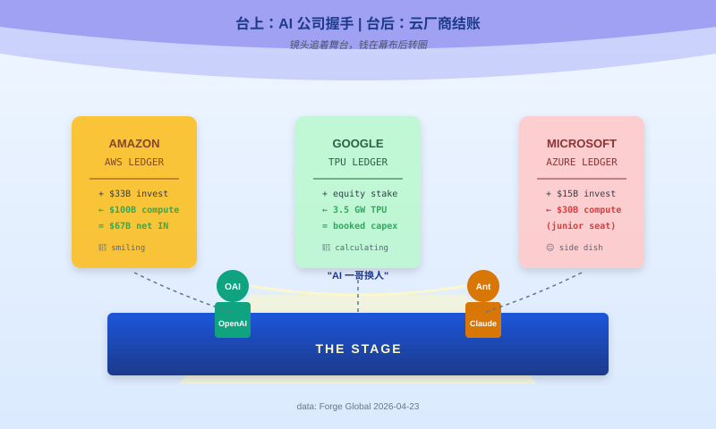
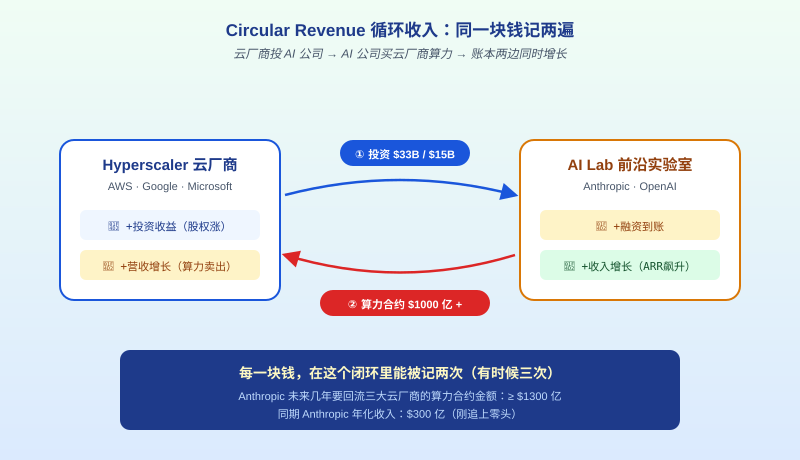

先算一笔账：一万亿里，一千三百亿是左手倒右手
我们把 Anthropic 这一年签的几张大合同摊开看。
2025 年 10 月，亚马逊宣布追加对 Anthropic 的战略投资至 330 亿美金。但合同没只写这一句。AWS 同时要求 Anthropic 在未来几年"消费"1000 亿美金的 AWS 算力，对应 5 吉瓦的 Trainium 容量。亚马逊投 330 亿进去，Anthropic 得把 1000 亿掏出来买亚马逊的芯片。
这叫什么投资？这叫预付卡。亚马逊给 Anthropic 发了一张 330 亿面值的 AWS 预付卡，要求持卡人必须消费 1000 亿。
差的那 670 亿是谁掏的？是其他投资人（GIC、Coatue、D.E. Shaw 这帮 Series G 金主）掏的现金，经过 Anthropic 的账本转一圈，最后流进 AWS 的营收口子。
2026 年 1 月，微软投了 150 亿。同一份协议里，Anthropic 承诺向 Azure 采购大约 300 亿美金算力。
同年晚些时候，谷歌和 Anthropic 签了 3.5 吉瓦的新一代 TPU 合约，容量 2027 年上线。具体金额没披露，但 3.5 吉瓦这个量级，对应的算力支出通常在 200-300 亿之间。
三家加一起，我们可以保守估一个数字：Anthropic 未来几年要回流给三大云厂商的算力合约金额，至少 1300 亿美金。
同一时期，Anthropic 自己的年化收入多少？2026 年 4 月，300 亿。
你没看错。它一年的"年化收入"才刚追上要付给云厂商的合约金额的零头。
这就是华尔街管这种事叫的那个词——circular revenue，循环收入。
简单说就是：云厂商把钱投给 AI 公司，AI 公司拿钱去买云厂商的算力，两边的账本同时增长。
云厂商记一笔投资收益（被投公司估值上涨），同时记一笔营收增长（算力消费）。AI 公司记一笔"融资到账"，同时记一笔"收入增长"（因为客户用 Claude 的流水也在涨）。
每一块钱，在这个闭环里能被记两次。有时候三次。

这不是阴谋。这是公开的、所有上市公司财报里都能查到的数字游戏。问题只在于——所有人都假装看不见。
华尔街假装看不见，因为 AI 板块是 2026 年上半年唯一还能托住美股的东西。VC 假装看不见，因为他们手里全是同一批 AI 标的。中国自媒体假装看不见，因为"Anthropic 反超 OpenAI"这个标题太好卖了。
就你我装看见。
那二级市场给的这一万亿，减去这 1300 亿的"预付卡流出"，还剩 8700 亿。
再减去公司自己披露的 IPO 目标估值——4000-5000 亿。差出来那 3700-4700 亿是啥？
我稍后会回答这个问题。先继续数钱。
OpenAI 和 Anthropic 的对决，其实是微软和亚马逊的对决
把镜头从前台两个 AI 实验室的脸上，移到它们身后站着的人。
OpenAI 身后站着两个人：微软和英伟达。微软总共往 OpenAI 里灌了 130 亿美金起步的现金，租给 OpenAI 全套 Azure 数据中心；英伟达则在 2025 年承诺投资 1000 亿美金，附带条款是"OpenAI 得用 NVIDIA 系统搭建 10 吉瓦的计算集群"——又一张预付卡，面值是芯片。
Anthropic 身后站着两个人：亚马逊和谷歌。AWS 是 Anthropic 的"主要训练合作伙伴"，Trainium 5 吉瓦；谷歌除了是投资人，还把 TPU 3.5 吉瓦容量锁给 Anthropic。微软也在 2026 年 1 月挤进来投了 150 亿，但论合同权重——主力战场是 AWS 和谷歌。
这张图拉出来你就看出来这局是什么局了。
OpenAI 队是 Azure 配英伟达，亚马逊没份，谷歌没份。Anthropic 队是 AWS 配谷歌 TPU，英伟达被谷歌 TPU 部分替代，微软吃不到主力份额。
我们说过这是代理人战争，现在可以再精确一点——这是云厂商为了消化自己的资本开支预算，在前台推出的两家 AI 零售商之间的战争。
2026 年五大云厂商（Amazon、Alphabet、Meta、Microsoft、Oracle）规划的基础设施资本开支是 6600-6900 亿美金。绝大多数要砸在 AI 算力、数据中心、网络上。
这些砸下去的算力，谁买？
企业客户的 AI 需求确实在涨，但数量级完全支撑不起 6900 亿的 capex。真正能把这些芯片烧起来的，是大模型训练+推理。而有能力烧这种规模算力的大模型公司，全世界只有五六家。
于是你看到的景象是：
云厂商 A 投钱给 AI 公司甲 → AI 公司甲用这笔钱买云厂商 A 的算力 → 云厂商 A 财报营收增长，同时账上多了一个估值涨了十倍的股权资产 → 云厂商 A 股价上涨，市场认为"AI 需求真实强劲" → 云厂商 A 继续扩大 capex → 继续找 AI 公司乙玩同样的游戏。
这个闭环里，AI 公司的前台地位是可替换的。
2024 年的明星可能是 OpenAI。2026 年 Q2 的明星换成 Anthropic。2027 年可能是 xAI，也可能是一家现在还没名字的中国公司。
但站在后面决定谁上位的那三家人，永远没变。
我知道有人会跳出来说——"你这么分析，那 Anthropic 的产品能力不算数吗？Claude Code 一个产品 ARR 25 亿美金，MCP 协议装机 9700 万，这些都是靠山厂商灌不出来的。"
算数。但只值 4000-5000 亿。这个数字不是我编的，是 Anthropic 自己请高盛和 JPMorgan 做的 2026 年底 IPO 估值目标。
剩下那 5000 亿，不是产品力，不是护城河，是别的东西。
二级市场的"一万亿"，是一张面值虚高的入场券
现在回答前面留的那个问题——二级市场给 1 万亿，IPO 目标 4000-5000 亿，差出来的 5000-6000 亿是啥？
是入场券溢价。
什么叫入场券？你想买 Anthropic，但这家公司不上市，你进不去。Anthropic 的 Series G 在 2026 年 2 月刚把估值抬到 3800 亿，能参与的 LP 不超过二十家——GIC、Coatue、D.E. Shaw、Dragoneer、Founders Fund、ICONIQ、MGX 这帮子。
普通机构投资者想沾边，只剩一个办法：去 Forge Global 或者 Hiive 这种二级市场平台，从早期员工、早期投资者手里买他们释放出来的那一小撮老股。
老股供应稀少，买家排队，价格就被抬起来了。
二级市场的买家清楚地知道自己买到的是什么——非流动性股权、少数股东、没有董事会席位、没有强制变现的权利、不承诺任何退出时间表。
买家还是愿意付钱，因为他们赌的是一件事：这家公司两年内会 IPO，IPO 时估值可能翻番。我现在按 1 万亿进场，到时候上市敲钟 1.5 万亿，我赚 50%。
这个逻辑在 2025 年之前一直成立。2025 年全球二级市场交易量创纪录的 2260 亿美金，同比增长 41%。76 家公司在二级市场首次挂牌。钱涌进这个口子的速度，比私募股权基金本身募资还快。
所以 Forge Global 的价格，不是公司价值的真实刻度。它是"我能花钱买一张后面 IPO 的优先入场券"的价格。
这张入场券在公开市场上是不存在的产品。它只存在于少数人之间的私下交易里。它的价格，取决于这些人对未来的想象——如果 IPO 能按时开，入场券值钱；如果 IPO 推迟，或者市场转冷，入场券作废，买家亏穿。
所以当你看到"Anthropic 估值 1 万亿"这个标题的时候，请在心里补一句注脚：这不是 Anthropic 的估值，这是一小撮 LP 给"两年后 Anthropic 上市时估值能翻番"这件事下的赔率。
赔率 1.5 倍。押盘的人用真金白银投票，说"我相信"。
我不反对他们相信。我只是想说清楚——你我不是他们。我们看到这个价格的时候，不是在看一家 AI 公司值多少钱，是在看一张赌桌的赔率。
就这。
那怎么办：换一把尺子，重新量 AI 公司
MIT 经济学家 Daron Acemoglu 2024 年算过一笔账：未来 10 年，AI 能为整个美国经济提供的总要素生产率增长，最多 0.71%。2026 年他再次公开说，这个数字没变，但市场已经用万亿估值给 AI 行业投票了。
他的刀落下来是锋利的——"估值和生产力的背离，是泡沫的教科书症状。"
我部分同意。但 Acemoglu 这一刀落错了地方。
因为 AI 这个盘子现在转起来，不是因为有人相信它能带来 10 年 0.71% 的生产力增长。是因为五家云厂商有 6900 亿美金 capex 必须花出去。这笔钱花不出去，股价就掉。股价掉，公司就被问责。公司被问责，管理层就丢工作。
所以 capex 必须花。花给谁不重要，重要的是花出去。花出去之后它会以"AI 公司营收增长"的名义回到财报里，接着股价继续涨，capex 继续批。
这个闭环的燃料不是生产力，是上市公司必须持续讲增长的制度性压力。生产力兑现与否，三年内不影响盘子转。
所以 Anthropic 估值 1 万亿这件事，如果你把它当成"AI 技术突破的里程碑"读，你会失望；如果你把它当成"AI 是否真的在改变经济"的信号读，你会困惑；但如果你把它当成"云厂商 capex 循环正在加速"的指标读，它和现实严丝合缝。
下次再有人跟你说某家 AI 公司估值多少钱，你换把尺子量——不看 ARR，看 net free cash flow（净自由现金流）。ARR 里面有多少是云厂商左手转右手，自由现金流会诚实地告诉你。
Anthropic 的自由现金流？2025 年光算力支出就 68 亿美金，收入 ARR 90 亿。净出 20 亿。2026 年这个缺口会比例放大，因为 1300 亿算力合约的支付期陆续到账。
一家净自由现金流为负、且这个负数还在扩大、收入增长的 60% 以上来自关联方循环交易的公司，估值 1 万亿。
你自己判断这是什么价格。反正台下那三家数钱的，没空回答你。